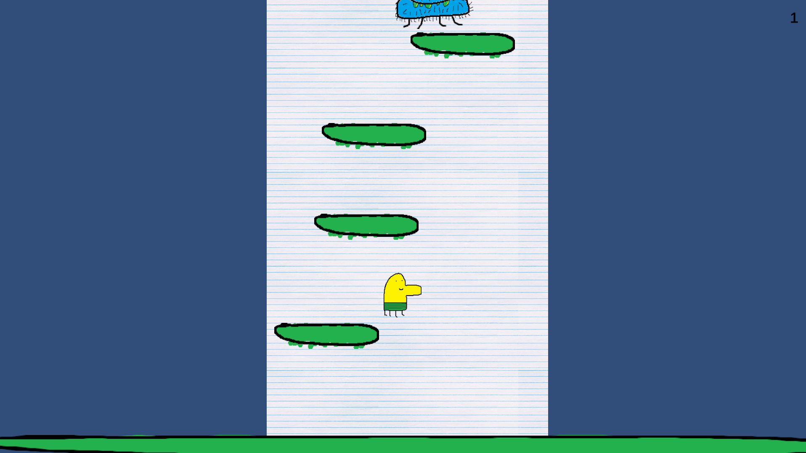
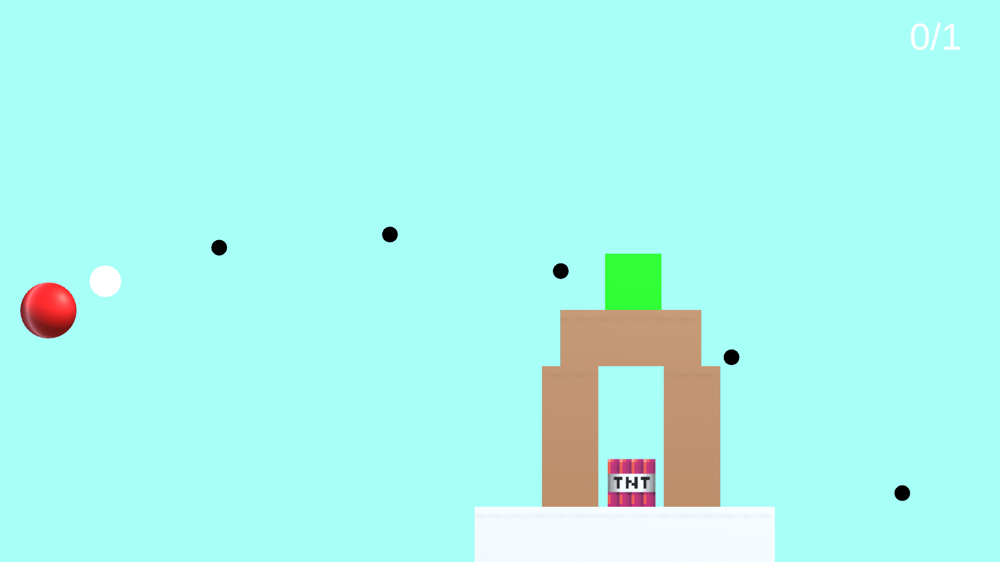
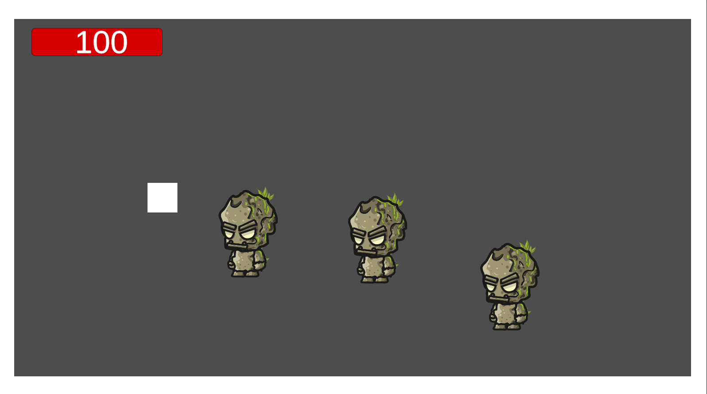

Mes Projets
Voici une sélection de mes réalisations en programmation de jeux vidéo, personnelles et académiques.
Earth Defender
Shooter survival game à durée infinie. Conception complète du gameplay et des mécaniques de survie progressive.
Unity / C# Remake de Doodle Jump
Reproduction fidèle du gameplay original avec un moteur physique adapté sous Unity.
Unity / C# Remake d’Angry Birds
Implémentation du système de tir par trajectoire et gestion des collisions et niveaux.
Unity / C# CRYPTFALL - WIP
Roguelike dungeon crawler inspiré de The Binding of Isaac. Développement complet du gameplay et de la génération procédurale.
Unity / C# / Git